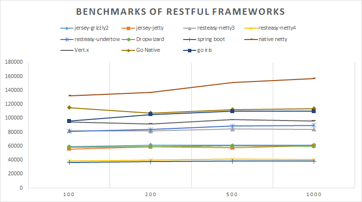

在微服务流行的今天，我们会从纵向和横向分解代码的逻辑，将一些独立的无状态的代码单元实现为微服务，可以将它们发布到一些分布式计算单元或者Docker中，并在性能需要的时候及时地创建更多的服务单元。
微服务是一个概念，并没有规定服务的格式，但是很多厂商和框架都不约而同的采用RESTful的架构,尽管也有一些其它的性能很好的RPC框架。
如何在Java生态圈选择一个轻量级的RESTful框架？可以参考一些其他人的经验， 比如我翻译的: 最好的8个 Java RESTful 框架。
就我个人而言，我选择框架的理由很简单：
- 简单，轻量级
- 性能好
- 稳定，可靠
- 易于开发和维护
我会首选遵循Java规范(JSR339)的框架，轻量级，便于发布到Docker容器中。 所以我不会选择Spring boot, Spring MVC, CXF等比较重的框架,也不会选择纯netty这样的太过底层，还得实现路由等基本功能框架。
因为追求轻量级，便于发布到docker容器中，我也不会考察JBOSS, Tomcat这样的JEE容器， 而是选用jetty, undertow这样的嵌入式容器。
所以，这里我挑选了几个候选者：
[Updated on 2015/11/18]
我增加了更多的 RESTful 框架,有些不是Jax-RS的实现，但是也有很活跃的社区。
- Jersey + Jetty4
- Spring Boot
- 纯Netty
- Vert.x
你会发现一些有趣的测试结果。
Jersey 是Jax-RS的官方参考实现，可以很好的和其它JEE容器集成。RESTEasy是JBoss出品的框架，也很容易的和其它容器集成。Dropwizard实际上集成了Jersey, Jetty以及其它的第三方库比如它的Metrics，提供了一站式的开发，略微有些厚重。
测试相关的代码已经放在了GITHUB上： 代码
编译代码
测试代码是一个多模块的Maven项目， 你直接运行maven clean package就可以生成各个jar,而且这些jar包含了所依赖的类，执行起来相当简单。
你也可以在每个模块下运行mvn exec:java启动服务，然后在浏览器中访问 http://localhost:8080/rest/hello (对于Jersey + Jetty,地址是http://localhost:8080/hello)
测试环境
服务器
AWS C3.2xlarge
- 8 cores (E5-2666 v3 @ 2.90GHz)
- memory: 16G (服务只分配了4G内存)
Java
1.8.0_51
测试工具
wrk
测试命令如: wrk -t16 -c1000 -d30s http://127.0.0.1:8080/rest/hello.
针对每个case, 我使用16个线程，以及100/200/500/1000并发进行测试。
服务启动命令
|
|
测试结果
测试结果数据可以查看这里： 测试数据,
延迟基本在几毫秒到10几毫秒之间。
图形化测试结果(y轴为Requests/sec, x轴为并发量)：

结论
从结果看，
- RESTEasy的性能要好于 Jersey,无论哪种嵌入式JEE容器。
- Jersey+Grizzly2和Jersey+Jetty, dropwizard性能差别不大
- dropwizard底层实际是Jersey+Jetty,性能结果也和Jersey+Jetty一样
- RESTEasy+netty (netty3)的结果并没有优于RESTEasy+undertow.这出乎我的意料，可能CPU和Memory占用上会好一些
- RESTEasy+netty4的性能远远低于RESTEasy+netty3，这出乎我的意料。或许因为Netty线程池的改变。
- 纯netty的性能远远高于其它框架，一方面是由于没有http router的逻辑，另一方面也显示了Netty框架的优秀。如果不是实现很复杂的路由和很多的Service,不妨使用纯Netty实现高性能。
- Spring Boot太厚重了，使用Spring MVC的语法，性能只有Jersey的一半。
- Vert.x底层使用Netty,可以使用Java 8 Lambda语法，也提供了其它语言的支持，
但是性能看起来不是太好，而且随着并发量增大吞吐率也随之下降。先前的vert.x测试有问题,只用到了单核，谢谢@Stream网友的提醒，我在代码中增加了vertx-verticles模块，支持多核(java -jar vertx-verticles-1.0-SNAPSHOT.jar -instances 20)。 Vert.x性能也不错。@heng
当然测试也有一点遗憾，就是没有记录测试时的CPU占用率和Memory占用率，以我个人的经验，这方面Netty会占一些优势。